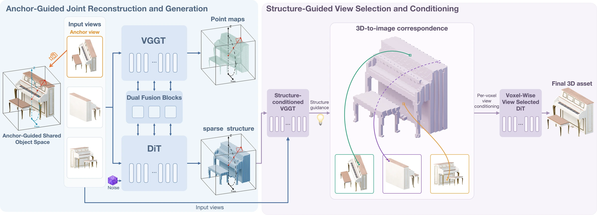
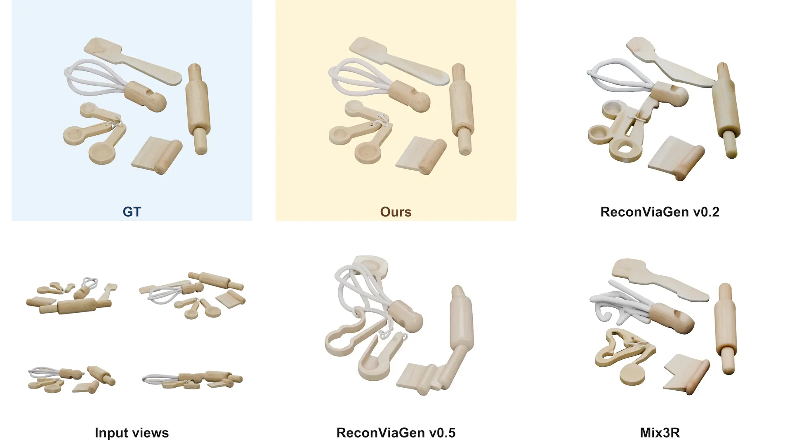
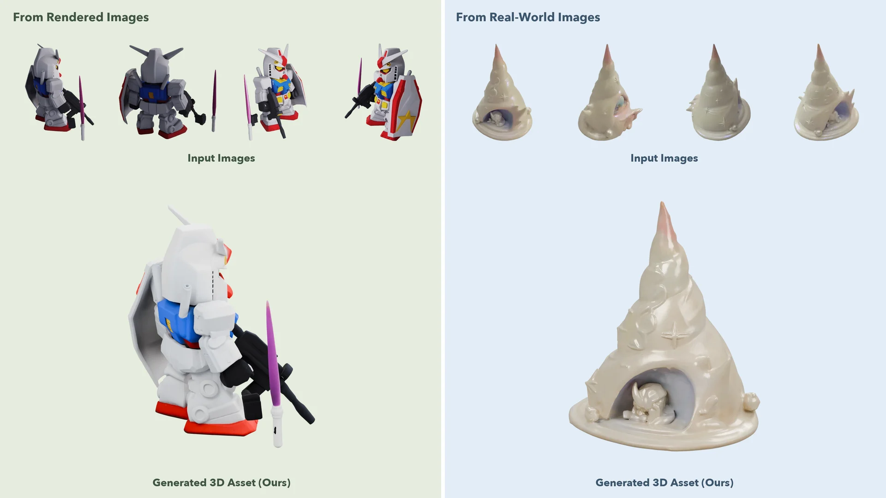

UniForge3D:
Joint 3D Reconstruction and Generation
in a Shared Anchor-Guided Space
- 1Peking University
- 2Math Magic
- 3The Hong Kong University of Science and Technology
* Equal contribution† Corresponding authors
Abstract
Generating complete 3D assets from sparse, unposed images requires preserving observed geometry while completing unseen regions. Joint reconstruction and generation offers a way to address both goals: reconstruction recovers the geometry observed in the input images, while generation contributes learned shape priors. However, combining camera-relative reconstruction with canonical-space generation introduces a coordinate mismatch that makes direct geometric interaction more difficult. Moreover, conditioning each 3D location on all views without accounting for their relevance may mix useful geometric evidence with unrelated image content, hindering local detail recovery. We present UniForge3D, which jointly models reconstruction and generation in a shared anchor-guided space, resolving their coordinate mismatch. This space follows the anchor view’s azimuth while keeping the object upright. The two branches exchange features bidirectionally to predict per-view point maps and a complete sparse voxel structure. We further condition point-map prediction on the generated structure to establish pixel-to-voxel correspondences and select the most informative input view for each voxel. Features from the selected views then guide detailed shape generation, helping preserve observed geometric details. Our method achieves state-of-the-art appearance and geometry results on Toys4K and GSO, generating complete 3D assets with improved fidelity.
Method

Joint reconstruction and generation
The reconstruction and generation branches interact bidirectionally to predict multi-view point maps and a complete sparse structure in a shared anchor-guided space.
Structure-guided view selection
Structure-conditioned point maps establish voxel-to-pixel correspondences, enabling the model to select informative views and use their image features to guide detailed shape generation.
Comparisons

More Results

Citation
@article{chen2026uniforge3d,
title = {UniForge3D: Joint 3D Reconstruction and Generation in a Shared Anchor-Guided Space},
author = {Chen, Wenjue and Chen, Wenyue and Zheng, Heliang and Jia, Rongfei and Liu, Yuan and Li, Meng},
journal = {arXiv preprint arXiv:2610.15357},
year = {2026}
}